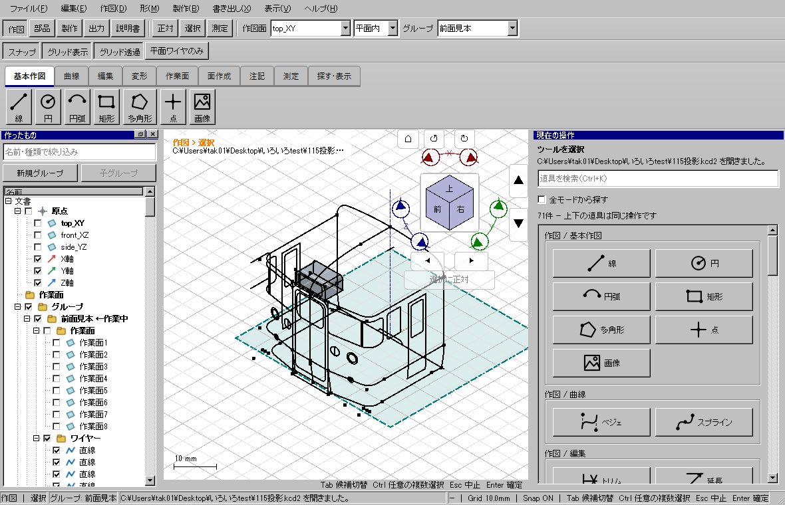

WP-08、製品候補 7cc00e419。作図点を置いている間でも、Ctrl＋クリックで既存の線分を選び、Deleteで削除できるようにした。選択ツールへ切り替える必要がなく、入力途中の点と数値を保って作図を続けられる。
完了：Windows CTest 195件、skip 0、開発版/配布版のUI各576件、旧self-test成功。CTest実時間1661.49秒。通常起動で115投影.kcd2を読み込み、ウィンドウ表示・イベントループ・描画を確認。最終検証の要約。配布先：out/releases/drawing-selection-release-20261024/package/kachakacha_cad_next.exe。実行証拠は同リリースのverification.jsonに保存。
| 場面 | 従来の問題 | 変更後 |
|---|---|---|
| 作図途中で線を消す | 選択モードへ切り替えると点・数値入力が失われた。 | Ctrlクリックで線分を選びDelete。道具・点・数値を保持。 |
| 複数の線を消す | 作図中のクリックが点入力に入り、選択へ渡らなかった。 | Ctrlクリックで追加/解除。Ctrlドラッグはワイヤー全体の包含/交差選択。 |
| 右クリックの線分削除 | 選択モードへ強制的に切り替わり、確認を取り消しても作図が戻らなかった。 | 純粋な作図中は道具を維持。依存先の一覧・赤いプレビュー・取消も維持。 |
| Undo/Redo | 削除後に入力途中の点を先に消したり、文書Undoで作図を取り消したりした。 | 「点→削除」なら削除を先に戻し、「削除→点」なら点を先に戻す。Redoでも入力を維持。 |
| 文字入力 | カーソル横の数値入力がDeleteを受け取り、選んだ線が消えない場合があった。 | 明示的な選択の直後は図形削除を優先。数値入力再開後と実テキスト欄では文字編集を優先。 |


利用者向けの詳しい手順。画像はWindowsの実Qtウィジェットへマウス・キーイベントを送って撮影した。OSのマウス装置を操作した試験とは区別する。
V2DrawingSelectionをUI内の専用クラスとして追加した。純粋な作図だけを対象に一時選択を許し、入力点の接頭部分と削除前後の文書履歴を照合する。文書IDと既存コマンドラベルも照合し、別の編集を削除履歴と誤認しない。コアAPI、保存形式、幾何精度、共有窓ヘッダーは変更していない。保存・読込・取消で古い入力との誤一致を防ぐ。
対象は直線、折れ線、矩形、円、円弧、点、ベジェ、スプライン、2点を結ぶ作図。押し出し・面取り・移動などの役割選択、一度だけの点取得は横取りしない。通常クリックは作図点入力、Escは入力取消とツール維持という既存契約を保つ。Inventor/Fusionの全操作との完全互換を表す変更ではない。
最終の重点証拠：Windows画面10 / offscreen10。初期段階の重点証拠：新規10 / 初回関連143 / 変更前の2失敗 / 修正後33 / 補強した保存・再読込 / 125% / 150% / 200%。
Ctrlクリックは線分単位、Ctrlドラッグはワイヤー全体という違いがある。範囲選択で隣接線分をまとめて消したくない場合はクリックで選ぶ。依存先のある削除は従来どおり事前確認が必要。常時60fpsや全ツールの完全互換を新たに主張するものではない。
